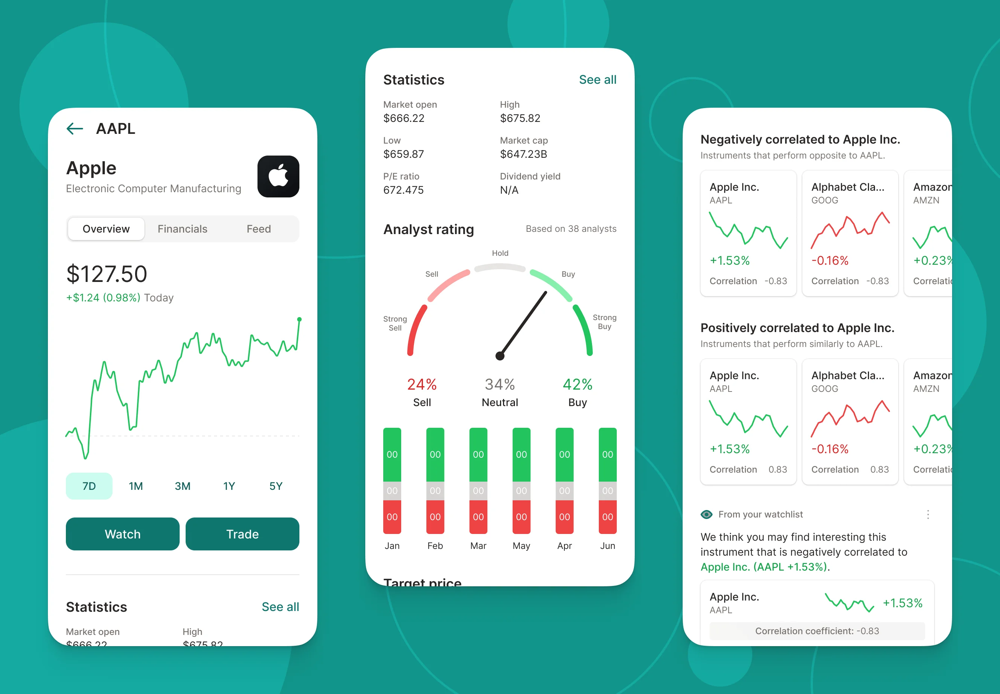
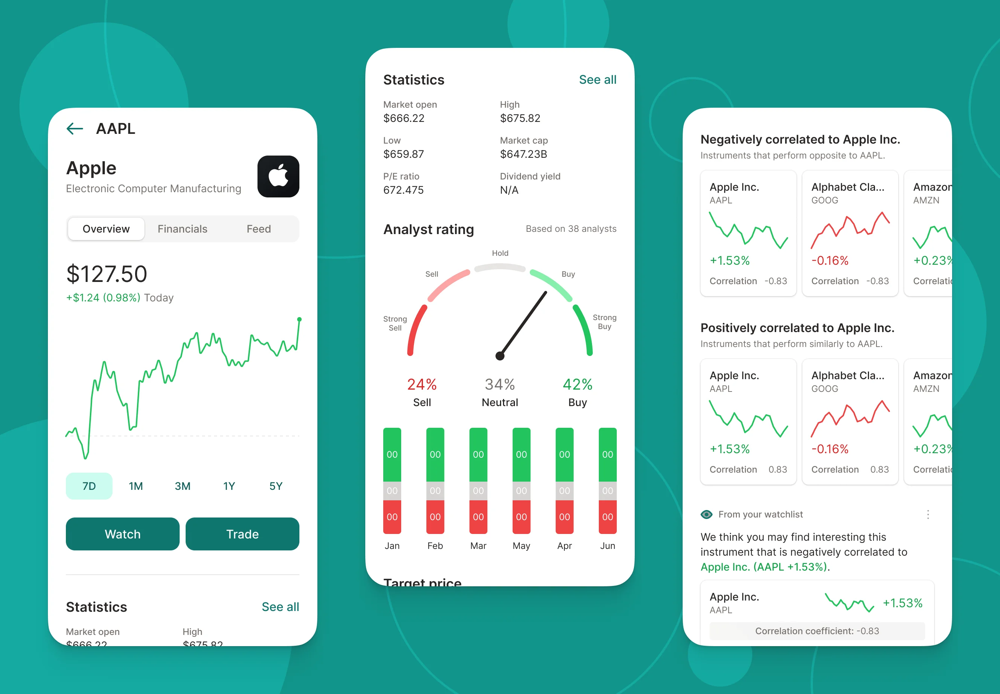

Upside
2021
Upside Technology is a consumer investment app designed to help aspiring investors achieve financial freedom by making more conscious and informed investment decisions.
Upside is a consumer investment app built to help new investors make informed financial decisions through clear guidance and accessible tools. The product aimed to simplify investing by translating complex concepts into a mobile experience designed for everyday users rather than professionals.
I joined as the founding designer at seed stage, shaping the product’s direction from the ground up. At a pivotal moment, I redefined the vision, shifting it from a professional-grade tool to a retail-focused app and designing an entirely new user experience in under a week — including strategy, personas, and potential business models.
Working closely with the executive team, I helped align the product with market needs and took on broader leadership responsibilities, inheriting key product decisions and shaping the long-term UX strategy as the company evolved.
 
